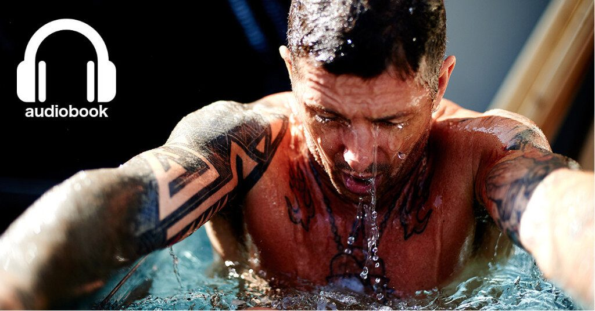

MAckenzie Ad
What Doesn’t Kill Us: How Freezing water, Extreme Altitude and Environmental Conditioning Will Renew Our Lost Evolutionary Strength
is officially out as an audiobook on Audible, Amazon, iBooks. It has been featured on NPR’s Weekend Edition Sunday and in Men’s Journal and debuted at the #112 spot on Amazon in January 2017. I recorded the audiobook myself with the help of Marcello Lessa, one of the top audio engineers in the Denver area. It runs just shy of 10 hours and is exactly the sort of inspiration that you need to reach your highest potential. Come with me on an evolutionary journey to understand how the comforts of the modern age are making us weak, and what we can do to get a little of our ancestral strength back. Download your copy today: Audible iBooks Amazon
Laird Ad
Here is what some of the early reviewers are saying:Climbing a mountain in nothing but a pair of shorts seems idiotic to most, but for Wim Hof and his companions, it’s just another day. When investigative journalist and anthropologist Carney heard about Hof’s mind boggling methods and claims that he could “hack” the human body, he knew he had to venture to Poland to expose this fraud. But in just a few days, Hof changed Carney’s mind, and so began a friendship and a new adventure. Carney now chronicles his journey to push himself mentally and physically using Wim Hof’s method of cold exposure, breath-holding, and meditation to tap into our primal selves. Our ancestors survived harsh conditions without modern technology, while we live in comfortable bubbles with little to struggle against and wonder how they survived.The question is,
What happens when we push our bodies to the limit?
Carney calls on evolutionary biology and other modern scientific disciplines to explore and explain Hof’s unconventional methods. Fresh and exciting, this book has wide appeal for readers interested in health, sports, self-improvement, and extreme challenges.―
Booklist
WDKU Cover Ad
“Damn fun and extremely well-researched,
What Doesn’t Kill Us
is a great addition to the canon of high performance literature!”―
Steven Kotler, New York Times bestselling author of Abundance and The Rise of Superman
“As a Navy SEAL, you live by the mantra, ‘what doesn’t kill us only makes us stronger.’ We would hear this phrase and repeat it, but we never had any proof that it was factual. Yet through comprehensive study, ScottCarney has brilliantly documented how engaging in environmental conditioning, breathing, meditation, and other techniques can actually make us physically and mentally stronger.
What Doesn’t Kill Us
is a fascinating book that will captivate all who read it and that will be of immense value to those in the military, those who are active in sports, and those who seek an alternate means of developing greater mental and physical strength.”
―Don D. Mann, New York Times bestselling author, Inside SEAL Team SIX